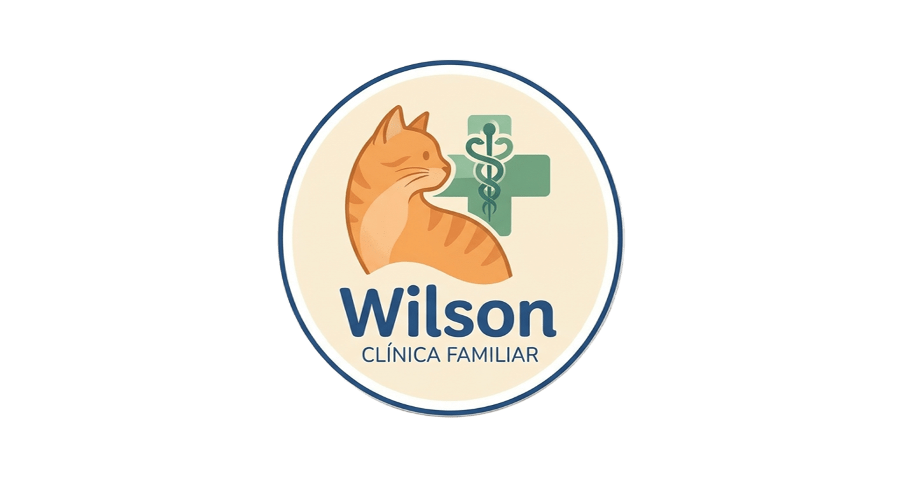

CLÍNICA FAMILIAR WILSON
Cuidamos de tu salud con atención cercana.
Somos una clínica médica familiar que organiza la atención de sus pacientes y acompaña a cada familia con un cuidado cercano, humano y atento a su salud.
Solicitar una citaCLÍNICA FAMILIAR WILSON
Somos una clínica médica familiar que organiza la atención de sus pacientes y acompaña a cada familia con un cuidado cercano, humano y atento a su salud.
Solicitar una cita
EL ORIGEN DE NUESTRO NOMBRE
Wilson es el nombre del gatito que llegó a la vida del dueño de la clínica el 8 de noviembre de 2022, cuando fue adoptado. Su compañía y cariño inspiraron el nombre de este proyecto: una forma de recordar que cuidar también significa estar cerca, brindar confianza y tratar a cada familia con calidez.
Nuestro equipo puede organizar citas y dar seguimiento a la atención de cada paciente.
La información clínica organizada ayuda a que los profesionales autorizados puedan continuar la atención del paciente.
La clínica administra insumos para uso propio y productos disponibles para la venta al público.